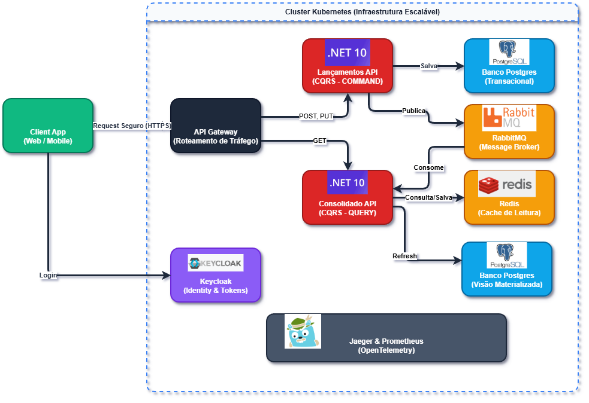
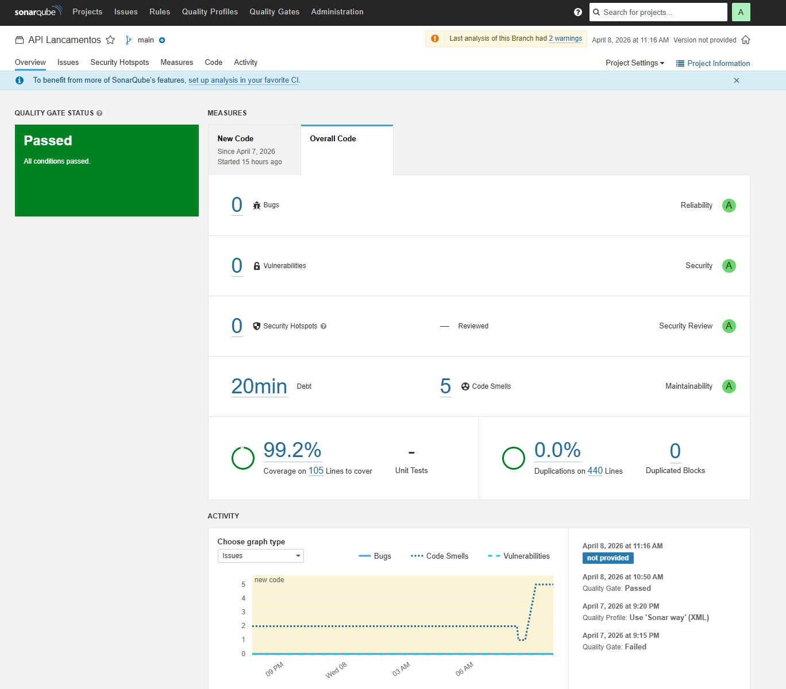
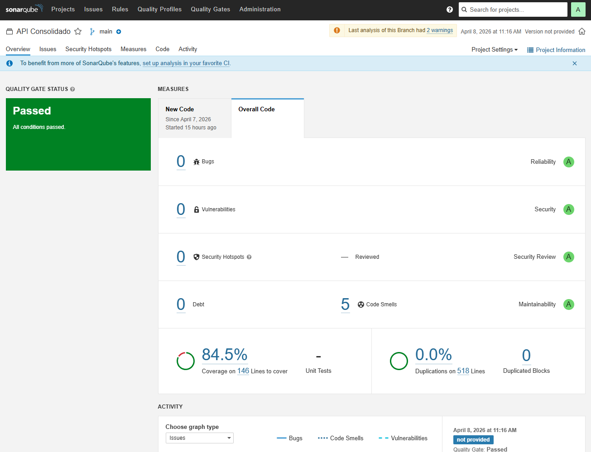

Visão geral do design da solução, decisões arquiteturais (CQRS & Event-Driven) e Stack Tecnológica.
O sistema foi construído visando alta disponibilidade, escalabilidade e resiliência. O domínio da aplicação consiste na gestão de lançamentos financeiros (crédito e débito) e na consolidação e exibição de um saldo diário. Para suportar um cenário onde o volume de leituras do saldo pode divergir amplamente do volume de inserções de caixa (por exemplo, sistemas muito intensos em leitura na virada do dia ou de grande volume de transações ao longo do dia), optou-se pela separação conceitual e física das responsabilidades.
A arquitetura principal repousa em dois pilares: CQRS (Command-Query Responsibility Segregation) a nível de microsserviços e Event-Driven Architecture (Arquitetura orientada a eventos).

Neste módulo ocorre a ingestão dos dados. Ele representa o Command da nossa arquitetura. Suas funções são validar regras de negócio rígidas (se o valor do lançamento é positivo, autenticação, etc) e persistir o dado no banco de forma segura.
Ele não se preocupa em acumular saldos. O principal objetivo é processar a entrada de dados com throughput extremo.
Este módulo representa a Query. Construído para ser extremamente rápido, é o serviço consultado pelo usuário final ou outros sistemas para resgatar o saldo. Para não impactar o banco de dados principal de escritas de Lançamento, ele mantém sua própria base de dados (projeção local) otimizada para a leitura do dia e emprega Caching Distribuído.
Para unir o mundo da Escrita com o da Leitura sem criar acoplamento temporal (onde um serviço derrubaria o outro através de HTTP Direto/REST se estivesse lento), foi adotado um modelo Event-Driven (Mensageria) usando o RabbitMQ e o core do MassTransit:
Sempre que o Serviço de Lançamentos persite uma operação (Ex: Débito de $50), ele emite um evento (LancamentoCriadoEvent) para um Message Broker interno. Imediatamente (trazendo o conceito de Consistência Eventual e Tempo Real), o serviço de Consolidado reage a essa mensagem lendo a fila, calculando o saldo localmente em seu banco próprio banco, invalidando os caches e preparando a vitrine de leituas novamente.
Para assegurar que as melhores práticas de mercado foram aplicadas e demonstrar domínio sobre stacks corporativos de ponta, o ecossistema abrange tecnologias de Alta Performance e Observabilidade nativa:
O conceito de Clean Code e Clean Architecture foi adotado de ponta a ponta no repositório.
Todas as entidades redundantes foram unificadas via camadas de **Domain e Contracts**. As regras de exceções, falhas em bancos e persistencia async assíncrona foram amplamente testadas utilizando xUnit, Moq, FluentAssertions com suporte de Mock HTTP e MessageBroker em cenários unitários e de Integração.
Comprovando as boas práticas e atendendo os requisitos do processo, os resultados das varreduras atestam elevada Cobertura de Testes Unitários (>80%), ausência de duplicidades críticas (Duplicates reduzidas) e 0 Bugs críticos.
Dashboard - Microsserviço API Lançamentos

Dashboard - Microsserviço API Consolidado
